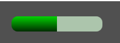
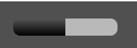
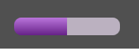

Tag progressBar
Tag progressBar
A tag/componente progressBar representa uma barra de progresso/estado, ótimo para dar noção ao usuário do progresso de algo em um formato visual.
Herança
O progressBar possui todas as características das tags visuais.
Veja:
Características
Além das características herdadas, o progressBar possui também as seguintes características:
Propriedades e atributos
| Propriedade | Tipo | Valor Padrão | Descrição |
|---|---|---|---|
| color | Cor | "green" | Define a cor da barra de progresso. Veja String de cores no Lua Form para obter a completa de cores e outras formas de uso. |
| position ** ou ** value | Float | 0.0 | Define a posição atual da barra de progresso. |
| min | Float | 0.0 | Define o valor mínimo da posição da barra de progresso. |
| max | Float | 100.0 | Define o valor máximo da posição da barra de progresso. |
| field | String | \<string vazio> | Caminho de um campo no NodeDatabase. Quando associado, o progressBar passa a ler seu "position/value" a partir deste campo. Veja também: Lua Form e NodeDatabase NodeDatabase |
| fieldMin | String | \<string vazio> | Caminho de um campo no NodeDatabase. Quando associado, o progressBar passa a ler seu "min" a partir deste campo. Veja também: Lua Form e NodeDatabase NodeDatabase |
| fieldMax | String | \<string vazio> | Caminho de um campo no NodeDatabase. Quando associado, o progressBar passa a ler seu "max" a partir deste campo. Veja também: Lua Form e NodeDatabase NodeDatabase |
| mouseGlow | Boolean | true | Define se a barra deve brilhar quando o usuário passar o mouse em cima. OBS: Este atributo só tem efeito se o valor do atributo hitTest for "true" |
| colorMode | Enumerado: "default" "hl" | "default" | Define como o progressBar desenhará sua cor na interface. "default" - Modo padrão, efeito degradê sobre a cor escolhida. "hl" - Half Lightness/meia iluminosidade. Aplica efeito degradê em cima do tom da cor escolhida com ilumonisade em 50%. As barrinhas de HP/MP/ETC do RRPG utilizam este modo de coloração. Por fixar a iluminosidade em 50%, cores com diferentes brilhos serão apresentadas da mesma forma (Exemplo: azul claro e azul escuro) |
Exemplos
Exemplo 1 - Exemplos de ProgressBars de várias cores
| \<?xml version="1.0" encoding="UTF-8"?> \<form name="frmFTeste"> \<progressBar width="150" color="green" top="25" left="20" value="50" max="100"/> \</form> |
|---|
| color="green" |  |
|---|---|
| color="red" | |
| color="black" |  |
| color="darkorchid" |  |
Created with the Personal Edition of HelpNDoc: Converting Word Documents to eBooks: A Step-by-Step Guide with HelpNDoc